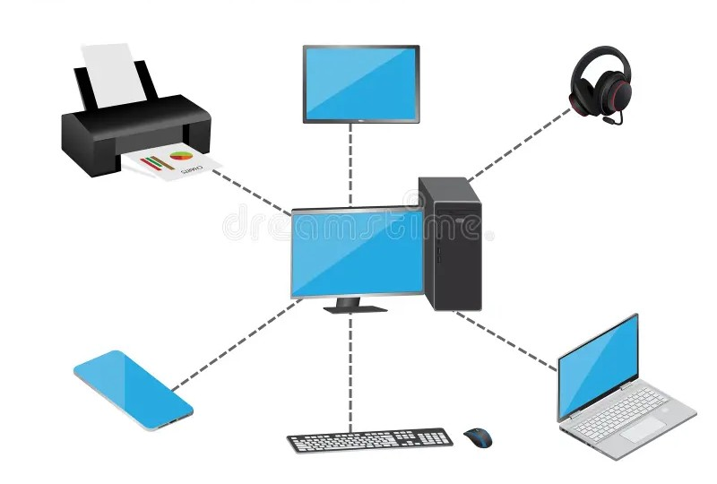
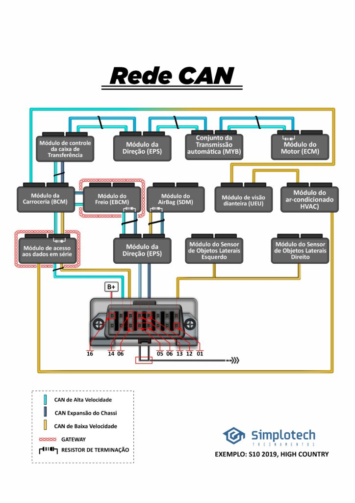
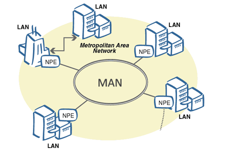
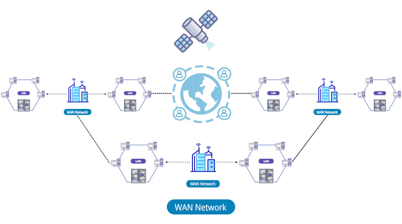

Classificação dos Tipos de Redes de Computadores
Redes de computadores permitem a comunicação entre dispositivos para compartilhamento de dados, internet, impressoras e outros recursos. Elas são classificadas de acordo com sua área de cobertura geográfica.
Rede de curtíssima distância usada para conectar dispositivos pessoais.

Rede local usada em casas, escolas e empresas.
É uma LAN sem fio que utiliza tecnologia Wi-Fi.
Interliga prédios dentro de um campus ou instituição.

Rede que cobre uma cidade inteira.

Rede de longa distância que conecta países e continentes.

| Tipo | Alcance | Exemplo |
|---|---|---|
| PAN | Poucos metros | Bluetooth |
| LAN | Prédio / Casa | Rede de escritório |
| WLAN | Prédio (sem fio) | Wi-Fi |
| CAN | Campus | Universidade |
| MAN | Cidade | Rede urbana |
| WAN | Países / Continentes | Internet |